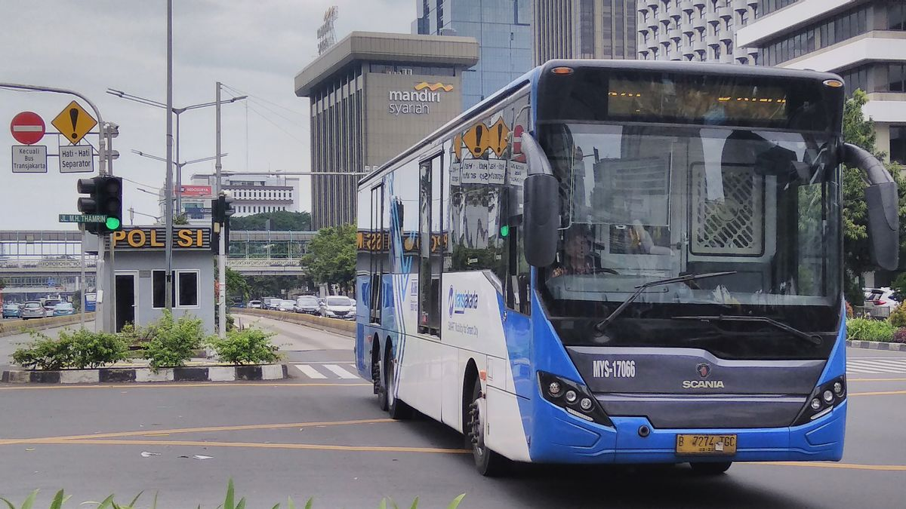
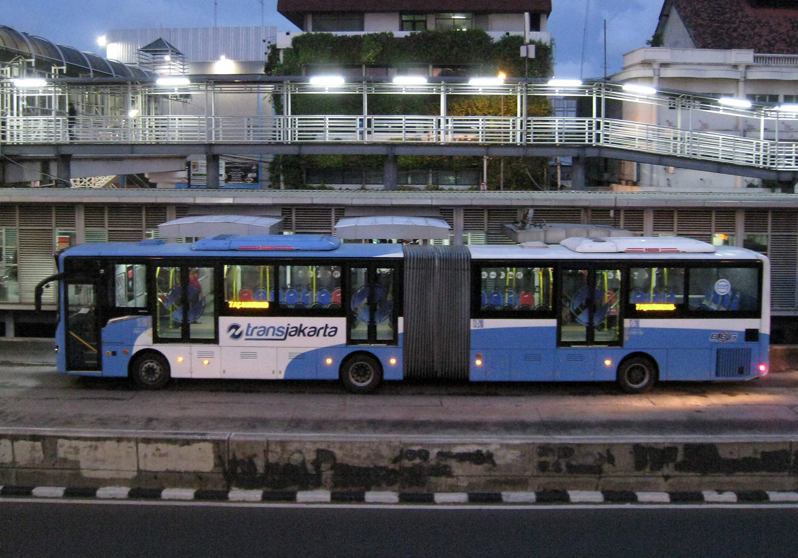
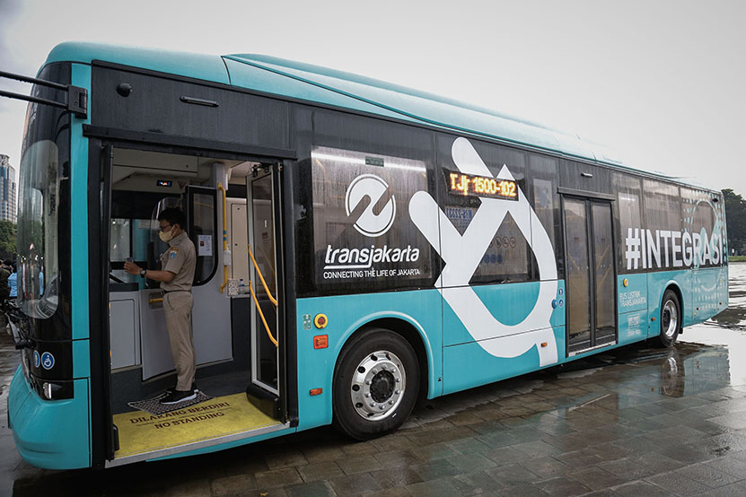
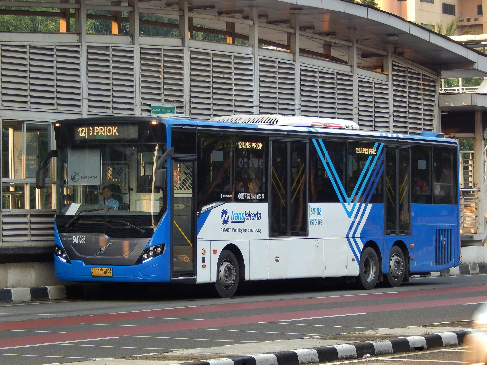

Busway - Transportasi Massal yang Handal
Busway adalah salah satu moda transportasi publik utama di kota besar. Dengan jalur khusus, Busway menawarkan perjalanan yang lebih cepat dan efisien, terutama di jam-jam sibuk.

Busway Standar adalah jenis busway yang paling umum digunakan, dengan rute yang mencakup sebagian besar area kota. Dirancang untuk menampung banyak penumpang dengan nyaman.
- Kecepatan Maksimum: 60 km/h.
- Kapasitas: Hingga 80 penumpang per bus.
- Fasilitas: AC, tempat duduk standar, dan aksesibilitas untuk penyandang disabilitas.

Busway Artikulasi memiliki kapasitas yang lebih besar dengan desain bus yang lebih panjang dan berbagi dua bagian yang terhubung. Ideal untuk rute dengan penumpang yang padat.
- Kecepatan Maksimum: 55 km/h.
- Kapasitas: Hingga 120 penumpang per bus.
- Fasilitas: AC, tempat duduk yang lebih banyak, dan area berdiri yang luas.

Busway Listrik adalah inovasi terbaru dalam transportasi publik, dengan bus yang digerakkan oleh tenaga listrik untuk mengurangi emisi karbon dan menciptakan lingkungan yang lebih bersih.
- Kecepatan Maksimum: 50 km/h.
- Kapasitas: Hingga 100 penumpang per bus.
- Fasilitas: AC, tempat duduk ergonomis, Wi-Fi, dan stasiun pengisian daya USB.

Mengapa Memilih Busway?
Busway menawarkan solusi transportasi massal yang efisien dan nyaman, dengan jalur khusus yang menghindari kemacetan kota.
Pelajari Lebih Lanjut